Nie zawsze trzeba wymieniać całe okno – w większości przypadków wystarczy profesjonalny serwis!
Umów serwis
Regulacja docisku, likwidacja przeciągów i prawidłowe działanie okuć.
Od 35 zł
Naprawa mechanizmów okiennych, wymiana uszkodzonych elementów okuć oraz przywracanie prawidłowego działania okien.
Cena po oględzinach
Zmiana strony otwierania skrzydła okiennego lub drzwiowego.
Cena po oględzinach
Usuwanie nieszczelności, przeciągów i poprawa izolacji termicznej.
Cena po oględzinach
Demontaż starego pakietu, montaż nowego oraz utylizacja starej szyby.
Od 350 zł + koszt szyby
Montaż nowych klamek do okien i drzwi PCV oraz drewnianych.
Od 40 zł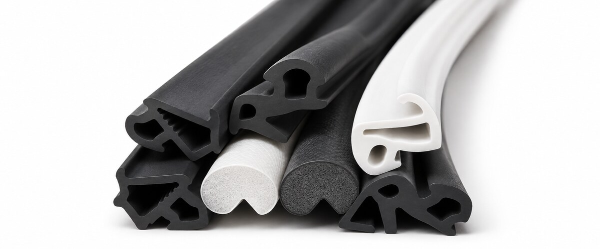
Nowe uszczelki do okien i drzwi PCV oraz drewnianych. Poprawa szczelności i komfortu.
Od 20 zł/mb
Zapewniają stałą wentylację, świeże powietrze i mniej wilgoci w pomieszczeniach.
Od 100 zł
Poprawa izolacji akustycznej i termicznej okien. Likwidacja nieszczelności.
Cena po oględzinachCeny orientacyjne – ostateczna wycena zależy od stanu okien i zakresu prac.
Regulacja okna – od 35 zł
Regulacja drzwi balkonowych – od 70 zł
Wymiana uszczelek – od 20 zł/mb
Wymiana klamki – od 40 zł
Montaż nawiewnika – od 100 zł
Wymiana szyby zespolonej – wycena indywidualna
Naprawa zamiast kosztownej wymiany okien
Doświadczenie i fachowa obsługa
Gwarancja na wykonane prace
Dojeżdżamy do klientów w promieniu 40 km
Naprawiamy i serwisujemy okna wyposażone w okucia ROTO, Winkhaus, SIEGENIA, MACO oraz wykonane z systemów profili VEKA, REHAU, KBE, Salamander, Schüco i Aluplast. Obsługujemy również inne marki dostępne na rynku polskim i europejskim.
Sprawdź, co mówią o nas klienci w Google.
Zobacz opinie w GoogleZobacz efekty naszych prac.
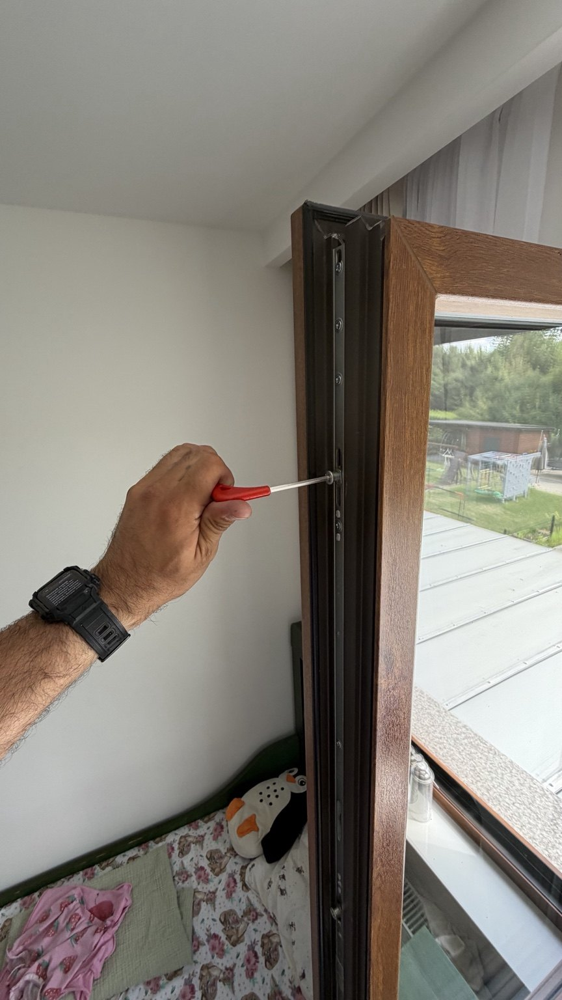
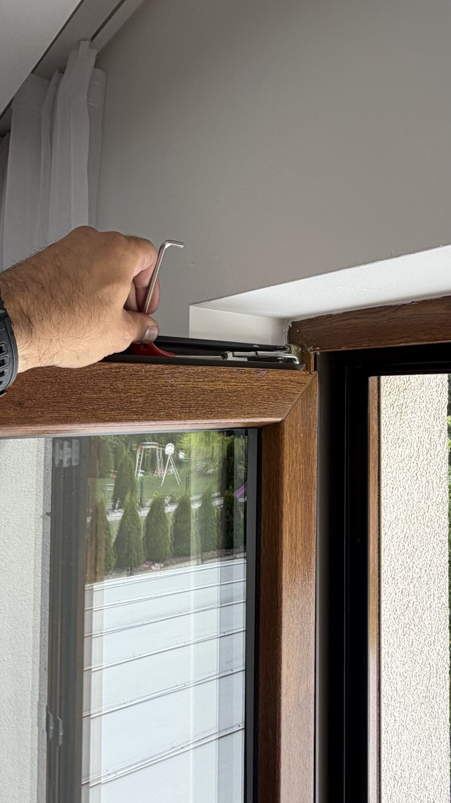
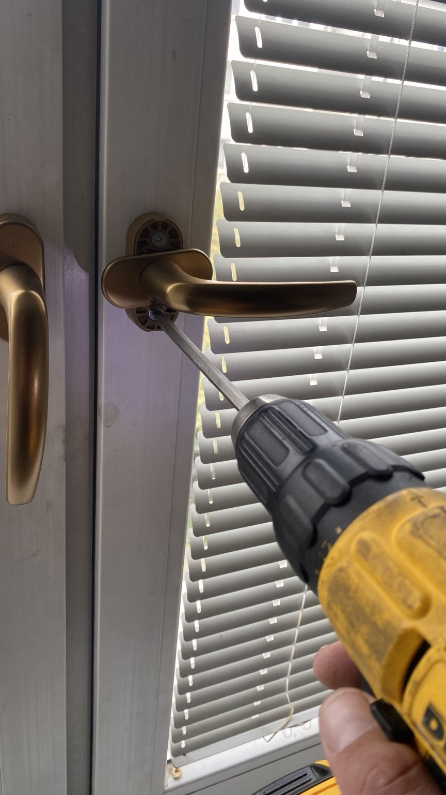
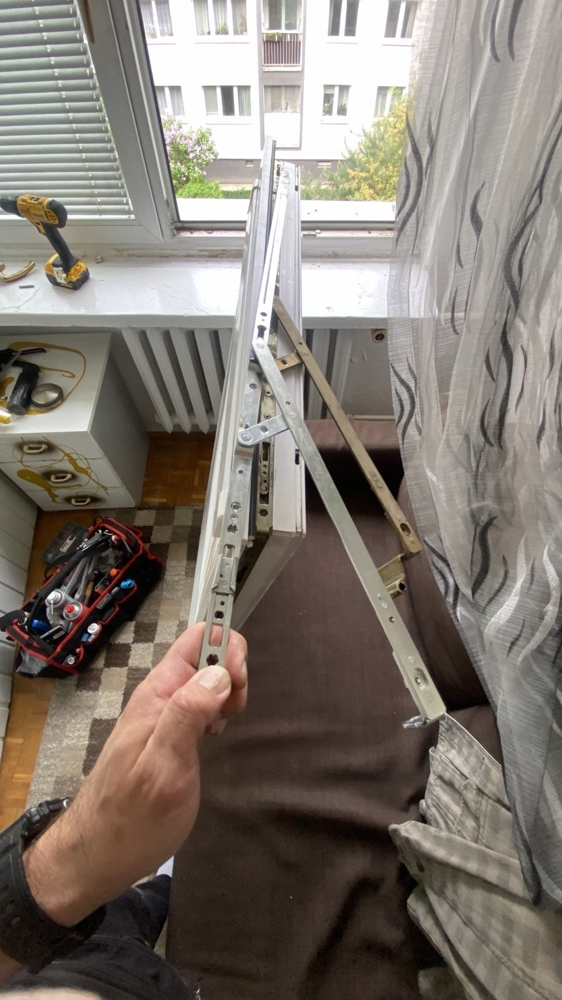
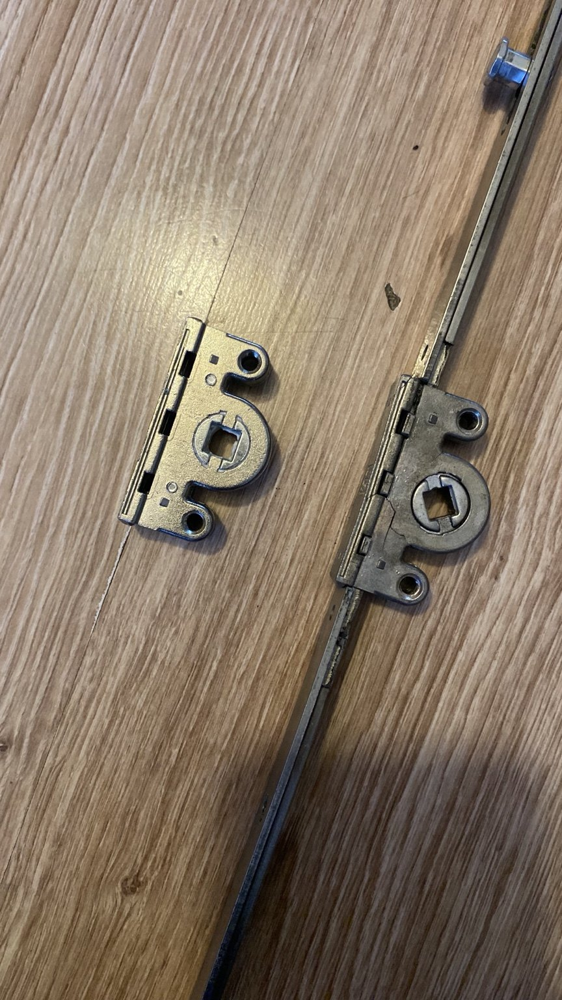
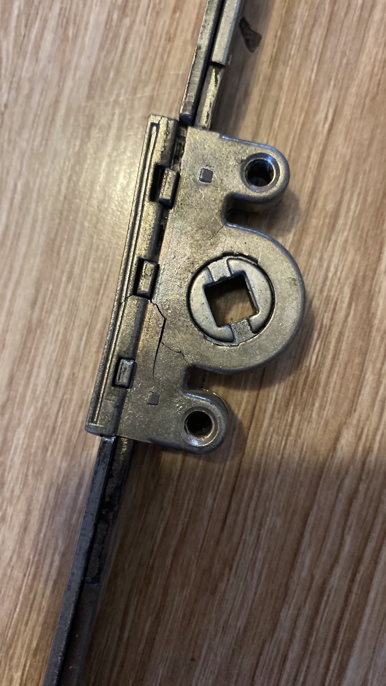
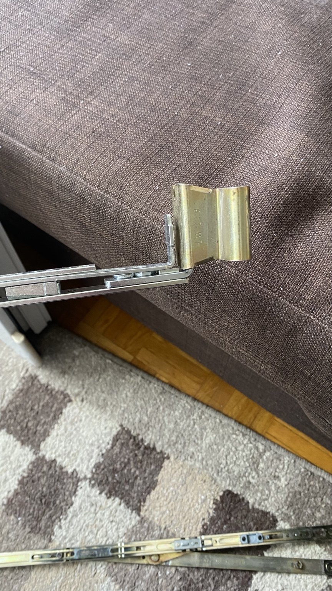
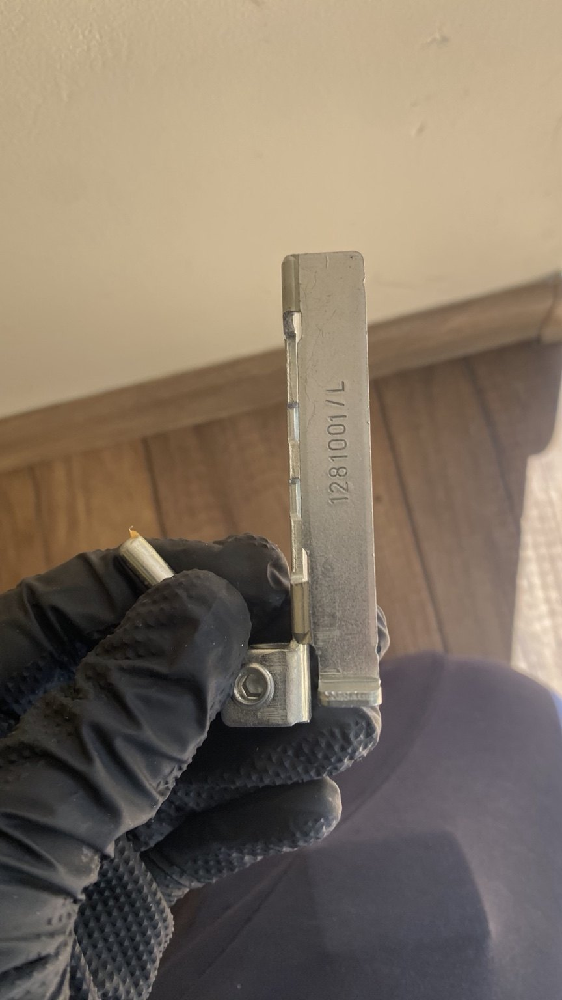
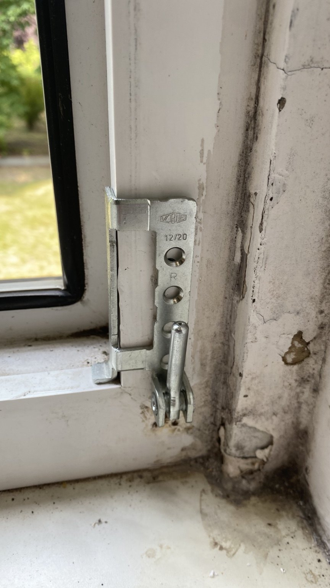
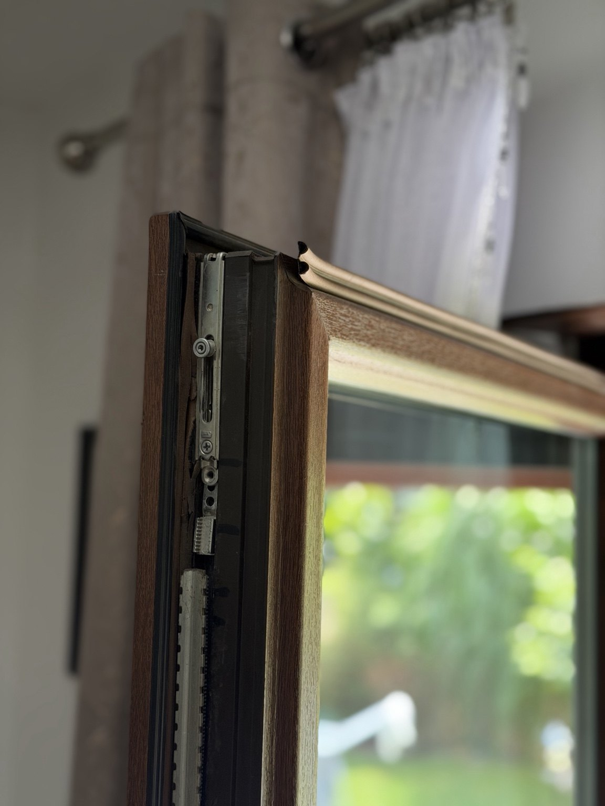
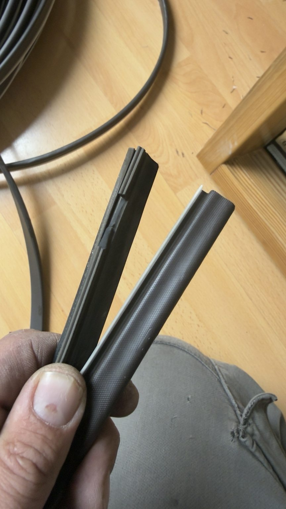
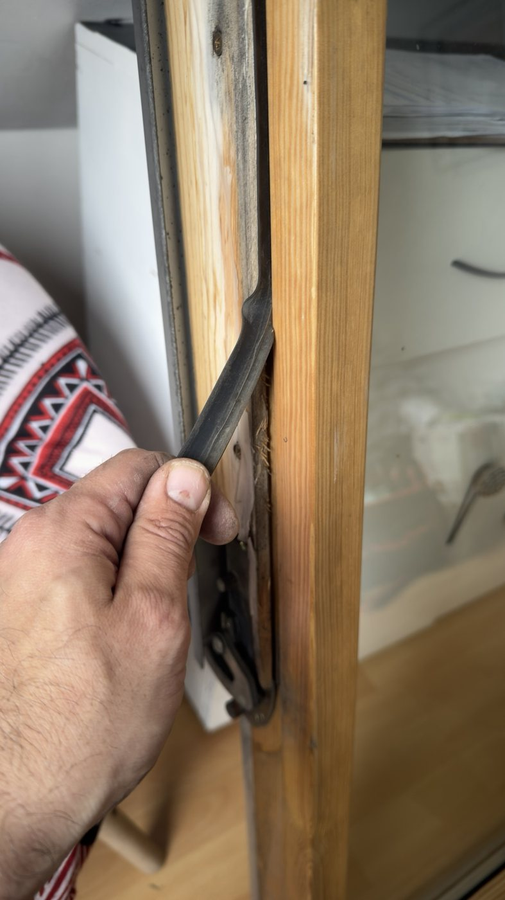
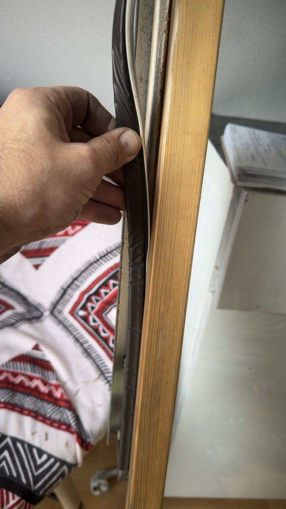
Proste wskazówki, jak dbać o okna i rozpoznać najczęstsze usterki.
Wieje od okna? Co sprawdzić przed wezwaniem serwisu?
Zamknij okno i ustal, skąd czuć powiew: przy uszczelce między skrzydłem a ramą, przy parapecie czy przy nawiewniku. Sprawdź, czy uszczelka nie jest pęknięta lub wysunięta i czy klamka domyka się bez oporu.
Jeśli skrzydło ociera o ramę, klamka chodzi ciężko lub powiew wyraźnie czuć na obwodzie skrzydła, opisz te objawy serwisantowi. Pomogą ustalić przyczynę.
 Jak dbać o uszczelki i okucia okienne?
Jak dbać o uszczelki i okucia okienne?
Uszczelki w oknach PVC przetrzyj miękką ściereczką zwilżoną wodą z odrobiną łagodnego detergentu, a potem osusz. Unikaj rozpuszczalników, ostrych gąbek i parownicy.
Z okuć usuń kurz. Miejsca smarowania i odpowiedni preparat sprawdź w instrukcji producenta danego systemu.
Czy każde okno ma tryb zimowy?
Określenie „tryb zimowy” zwykle oznacza zmianę docisku skrzydła do ramy. Sposób regulacji zależy od zastosowanych okuć. Przy sprawnym i szczelnym oknie sama zmiana pory roku nie wymaga regulacji.
Jeśli okno zaczęło przepuszczać powietrze lub trudniej się zamyka, warto sprawdzić stan uszczelek, ustawienie skrzydła i działanie okuć.
Skontaktuj się z nami i umów profesjonalny serwis okien oraz drzwi balkonowych we Wrocławiu i okolicach.
Zadzwoń: +48 603 939 032